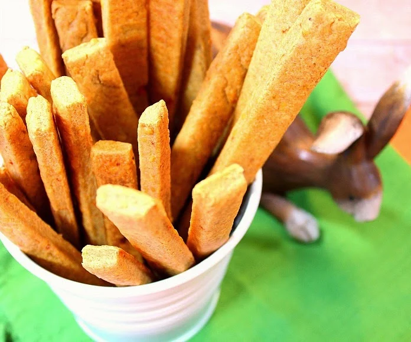
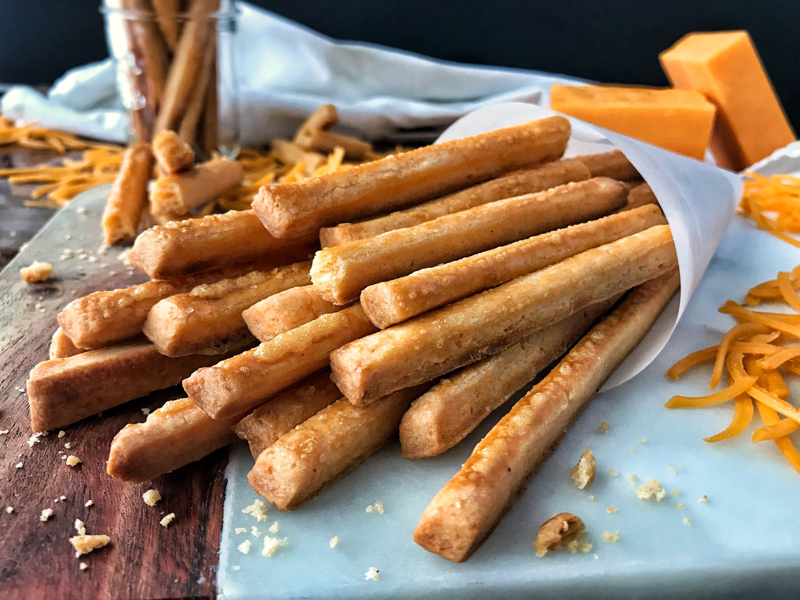
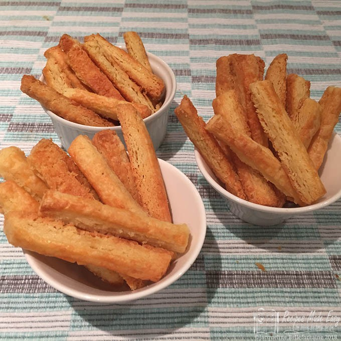

<html></html>
<head>
    <title>recipe</title>
    <meta name="viewport" content="width=device-width, initial-scale=1">
    <link rel="stylesheet" href="recipesty.css">
    <link rel="stylesheet" href="https://fonts.googleapis.com/css?family=Zain|ABeeZee|Inter">
</head>
<body>
    <div class="header">
        <h1>Flavor Fusion</h1>
    </div>
    <div class="navbar">
        <ul>
            <li><a href="frontpage.html">Home</a></li>
            <li><a href="category1.html">Appetizers</a></li>
            <li><a href="category2.html">Main Courses</a></li>
            <li><a href="category3.html">Desserts</a></li>
        </ul>
    </div>
    <div class="name">
        <p style="font-size: 250%;">Pimiento Cheese Straws</p>
    </div>

    <div class="scrolling-gallery">
        
        
        
        
    </div>

    <div class="desc">
        <div class="descinfo">
            <p>
                A cheese straw is basically a cracker. Here, the dough is piped into skinny strips before being baked. They're great to make as an appetizer or even for gift giving around the holidays.
            </p>
        </div>

        <div class="time">
            
            <br> Total Time: 1hr 50min
        </div>

        <div class="flip-card">
            <div class="flip-card-inner">
              <div class="flip-card-front">
                
                <br>
                Nutritional information
              </div>
              <div class="flip-card-back">
                <p>
                    serving size: 1 of 24<br>
                    calories: 102<br>
                    total fat: 7g<br>
                    carbs: 7g<br>
                    protein: 3g<br>
                    cholesterol: 20mg<br>
                    sodium: 108mg<br>
                </p>
              </div>
            </div>
          </div>
        
    </div>

    <div class="bottom">
        <div class="ingredients">
            <h2 style="text-align: center;">Ingredients</h2>
            <hr class="divider" style="width: 70%">
            <div class="checkbox">
                <form>

                    <p>
                        <input type="checkbox" name="ingredients" class="strikethrough">
                        <label>1/2 cup (1 stick) salted butter, at room temperatures<br></label>
                    </p>

		    <p>
                        <input type="checkbox" name="ingredients" class="strikethrough">
                        <label>4 ounces extra-sharp Cheddar, freshly shredded<br></label>
                    </p>

		    <p>
                        <input type="checkbox" name="ingredients" class="strikethrough">
                        <label>4 ounces smoked yellow Cheddar, freshly shredded<br></label>
                    </p>

		    <p>
                        <input type="checkbox" name="ingredients" class="strikethrough">
                        <label>2 teaspoons Miss Brown’s House Seasoning, recipe follows<br></label>
                    </p>

		    <p>
                        <input type="checkbox" name="ingredients" class="strikethrough">
                        <label>1/4 teaspoon cayenne pepper<br></label>
                    </p>

		    <p>
                        <input type="checkbox" name="ingredients" class="strikethrough">
                        <label>1 1/2 cups soft wheat all-purpose flour, such as White Lily<br></label>
                    </p>

		    <p>
                        <input type="checkbox" name="ingredients" class="strikethrough">
                        <label>1 teaspoon baking powder<br></label>
                    </p>

		    <p>
                        <input type="checkbox" name="ingredients" class="strikethrough">
                        <label>1 tablespoon diced pimientos plus 1 tablespoon pimiento juice<br></label>
                    </p>
                    
                </form>
             </div>
        </div>        

        <div class="instructions">
            <h2 style="text-align: center;">Instructions</h2>
            <hr class="divider">
            <div class="steps">
                <ol type="1">
                    <li>Line 2 baking sheets with parchment paper. Combine the butter, extra-sharp Cheddar, smoked Cheddar, House Seasoning and cayenne pepper in a food processor and pulse until thoroughly combined, about 2 minutes. Sift together the flour and baking powder and add to the food processor. Pulse until combined. Add the pimientos and pimiento juice. Add 2 tablespoons of water and pulse until the mixture is smooth, adding an additional 2 tablespoons of water if needed to reach a pipe-able consistency.</li><br>

                    <li>Spoon the dough into a pastry bag fitted with a star tip. Pipe into 3-inch pieces on the prepared baking sheets. Freeze for 30 minutes.</li><br>
                
                    <li>Preheat the oven to 350 degrees F.</li><br>
                
                    <li>Bake the cheese straws, rotating the pans halfway through, until they are crisp and cooked through, 18 to 20 minutes. Remove from the oven, then remove from the baking sheets to wire racks to cool. Store at room temperature in an airtight container for up to 3 weeks.</li><br>
                </ol>
            </div>
        </div>
    </div>
</body>
</html>